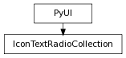

class counterpart of mel function iconTextRadioCollection
This command creates a cluster for iconTextRadioButtons. Clusters will be parented to the current default layout if no parent is specified with the -p/parent flag. As children of the layout they will be deleted when the layout is deleted. Clusters may also span more than one window if the -g/global flag is used. In this case the cluster has no parent so must be explicitly deleted with the ‘deleteUI’ command.
Allows a particular iconTextRadioButton in the collection to be selected without invoking the commands attached to the -cc/changeCommand, -onc/onCommand, or -ofc/offCommand flags. This flag is only meaningful when used in conjuction with the -edit and -select flags.
Derived from mel command maya.cmds.iconTextRadioCollection
Returns a string list giving the long names of all the items in this collection. Flag can have multiple arguments, passed either as a tuple or a list.
Derived from mel command maya.cmds.iconTextRadioCollection
Set the collection to have no parent layout. If the collection has a parent layout then it will be deleted with that layout, otherwise if it is specified to be global it must be explicitly deleted.
Derived from mel command maya.cmds.iconTextRadioCollection
Returns the number of items that are in this collection.
Derived from mel command maya.cmds.iconTextRadioCollection
Select the specified collection item. If queried will return the name of the currently selected collection item.
Derived from mel command maya.cmds.iconTextRadioCollection
Select the specified collection item. If queried will return the name of the currently selected collection item.
Derived from mel command maya.cmds.iconTextRadioCollection